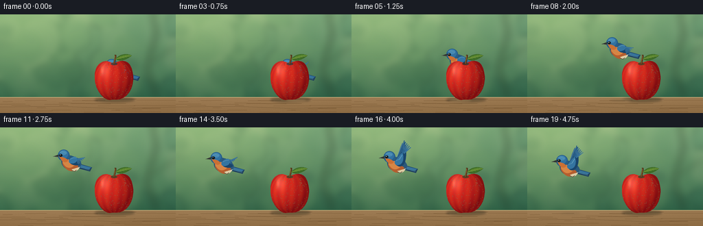
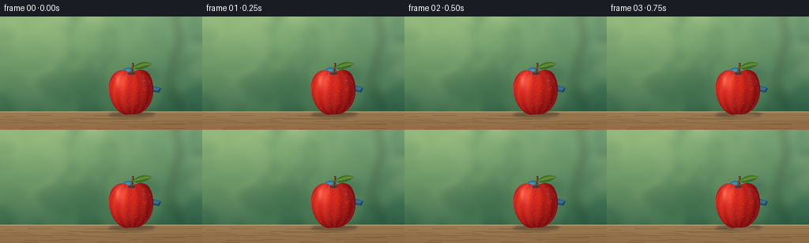
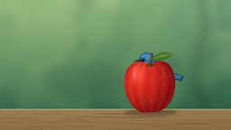

CODING AGENTS AS PIXEL WORLD MODELS
traex/GPT-6.1-Sol · dynamic_spatial_relationship_0037
点击播放 · 原生 RGB 像素
逐轮保存的候选
回放视频、检查图与代码变化。
每份候选均可单独播放。实际图片检查记录在下方工具轨迹中。
候选 01播放与检查图
点击播放 · 原生 RGB 像素

展开代码变化
--- 上一保存版本
+++ 本次保存版本
@@ -0,0 +1,194 @@
+from pathlib import Path
+import math
+import numpy as np
+from PIL import Image, ImageDraw, ImageFilter
+import artifact_io
+
+ROOT = Path(__file__).resolve().parent
+W,H,S=256,144,4
+rng=np.random.default_rng(83)
+
+def bezier(points,n=25):
+ p=np.asarray(points,float); t=np.linspace(0,1,n)[:,None]
+ if len(p)==4: return ((1-t)**3*p[0]+3*(1-t)**2*t*p[1]+3*(1-t)*t*t*p[2]+t**3*p[3]).tolist()
+ return ((1-t)**2*p[0]+2*(1-t)*t*p[1]+t*t*p[2]).tolist()
+
+def shape(draw,segments,fill):
+ pts=[]
+ for seg in segments: pts+=bezier(seg)
+ draw.polygon([(round(x*S),round(y*S)) for x,y in pts],fill=fill)
+
+def poly(d,pts,fill): d.polygon([(int(x*S),int(y*S)) for x,y in pts],fill=fill)
+def line(d,pts,fill,width=1): d.line([(round(x*S),round(y*S)) for x,y in pts],fill=fill,width=max(1,round(width*S)),joint='curve')
+def ellipse(d,box,fill): d.ellipse(tuple(round(x*S) for x in box),fill=fill)
+
+# A softly defocused garden, entirely constructed from color and geometry.
+y,x=np.mgrid[0:H*S,0:W*S]/S
+blend=np.clip(y/130,0,1)[...,None]
+base=np.array([112,157,117])*(1-blend)+np.array([41,92,68])*blend
+light=np.exp(-((x-35)**2/140**2+(y-16)**2/95**2))
+base+=light[...,None]*np.array([38,31,12])
+base+=rng.normal(0,.5,(H*S,W*S,1))
+bg=Image.fromarray(np.uint8(np.clip(base,0,255)),'RGB')
+bokeh=Image.new('RGBA',bg.size); d=ImageDraw.Draw(bokeh)
+for i in range(90):
+ cx,cy=rng.uniform(-10,270),rng.uniform(-15,130)
+ rr=rng.uniform(5,27)
+ color=([215,221,154] if i%4==0 else [41,85,53] if i%3==0 else [131,171,107])
+ ellipse(d,(cx-rr,cy-rr,cx+rr,cy+rr),tuple(color)+(int(rng.uniform(15,56)),))
+bokeh=bokeh.filter(ImageFilter.GaussianBlur(5*S)); bg=Image.alpha_composite(bg.convert('RGBA'),bokeh)
+# Far branch shapes softly melt into the shallow depth of field.
+far=Image.new('RGBA',bg.size); fd=ImageDraw.Draw(far)
+line(fd,[(228,120),(214,79),(228,28),(221,-10)],(59,77,46,90),5)
+line(fd,[(216,73),(254,47)],(62,76,47,70),3)
+far=far.filter(ImageFilter.GaussianBlur(5*S)); bg=Image.alpha_composite(bg,far)
+# A sun-warmed wooden garden ledge across the bottom of the shot.
+wood=np.zeros((H*S,W*S,4),dtype=np.uint8)
+Y,X=np.mgrid[0:H*S,0:W*S]/S
+mask=Y>=121
+noise=rng.normal(0,1.05,(H*S,W*S))
+grain=2.3*np.sin(Y*7.2+np.sin(X/29)*.6)+1.1*np.sin(Y*19+X/12)
+shade=(Y-121)*-.6+5*np.exp(-(X-70)**2/170**2)+grain+noise
+for c,value in enumerate([153,119,79]): wood[:,:,c]=np.clip(value+shade,0,255)
+wood[:,:,3]=mask*255
+bg=Image.alpha_composite(bg,Image.fromarray(wood))
+d=ImageDraw.Draw(bg)
+line(d,[(0,121),(256,121)],(211,180,127,255),.65)
+line(d,[(0,135),(86,134),(165,137),(256,135)],(98,72,42,145),.45)
+for i in range(26):
+ yy=rng.uniform(123,144); xx=rng.uniform(-20,240)
+ line(d,[(xx,yy),(xx+rng.uniform(10,60),yy+rng.uniform(-.35,.35))],(105,74,39,55),.25)
+
+# Apple silhouette and surface: gently asymmetric, indented at the stem.
+apple=Image.new('RGBA',bg.size); am=Image.new('L',bg.size); ad=ImageDraw.Draw(am)
+segments=[[(165,72),(151,62),(137,73),(138,91)],[(138,91),(137,106),(148,124),(160,125)],[(160,125),(167,123),(171,126),(179,122)],[(179,122),(192,115),(196,97),(193,84)],[(193,84),(190,67),(178,64),(165,72)]]
+shape(ad,segments,255)
+X,Y=np.meshgrid(np.arange(W*S)/S,np.arange(H*S)/S)
+nx=(X-166)/29; ny=(Y-96)/30
+z=np.sqrt(np.maximum(0,1-nx*nx-ny*ny))
+lam=np.clip(-.49*nx-.42*ny+.72*z,0,1)
+texture=rng.normal(0,.55,X.shape)
+ribs=np.sin(np.arctan2(nx,np.maximum(z,.05))*13+ny*.9)
+red=134+95*lam+7*ribs+texture
+green=17+29*lam+5*ribs+texture*.5
+blue=17+16*lam+texture*.5
+# broad upper-left sheen and a small brighter reflection
+spec=np.exp(-((X-153)**2/7**2+(Y-81)**2/12**2))*38
+spec+=np.exp(-((X-149)**2/2.2**2+(Y-82)**2/6.3**2))*30
+rgb=np.stack([red+spec*.6,green+spec,blue+spec*.85],-1)
+rgba=np.dstack([np.uint8(np.clip(rgb,0,255)),np.asarray(am)])
+apple=Image.fromarray(rgba,'RGBA')
+ad=ImageDraw.Draw(apple)
+# Very fine lenticels follow the smooth red skin.
+for i in range(200):
+ xx=rng.uniform(139,192); yy=rng.uniform(71,124)
+ if am.getpixel((int(xx*S),int(yy*S))) and ((xx-166)/29)**2+((yy-96)/30)**2<.87:
+ rr=rng.uniform(.08,.22)
+ ellipse(ad,(xx-rr,yy-rr,xx+rr,yy+rr),(247,174,113,int(rng.uniform(25,78))))
+ellipse(ad,(161.3,70.3,171,74.1),(93,34,14,180))
+line(ad,bezier([(166.5,72.2),(166.3,67),(169,63),(168,59)]),(78,48,23,255),2.5)
+line(ad,bezier([(166,71.7),(166.2,66),(168,64),(167.4,60)]),(156,113,58,255),.65)
+# Single green leaf with curved outline and veins.
+shape(ad,[[(168,65),(176,56),(186,57),(192,60)],[(192,60),(185,66),(175,70),(168,65)]],(61,107,38,255))
+shape(ad,[[(168.5,65),(177,59),(184,58),(191,60)],[(191,60),(183,62),(175,65),(168.5,65)]],(87,132,45,255))
+line(ad,bezier([(168,65),(175,63),(185,61),(191,60)]),(158,173,74,255),.45)
+for xx,yy in [(174,64),(178,63),(182,62),(186,61)]:
+ line(ad,[(xx,yy),(xx+1.5,yy-3)],(122,157,61,180),.3)
+ line(ad,[(xx,yy),(xx+3,yy+1)],(125,154,62,150),.3)
+
+# Bluebird drawing. Wings are articulated and individual flight feathers fan
+# smoothly through a periodic stroke, while head/body markings stay coherent.
+def bird(cx,cy,phase,flying):
+ layer=Image.new('RGBA',bg.size); d=ImageDraw.Draw(layer)
+ def P(x,y): return (cx+x,cy+y)
+ def E(box,color): ellipse(d,(cx+box[0],cy+box[1],cx+box[2],cy+box[3]),color)
+ def L(pts,color,w=1): line(d,[P(*p) for p in pts],color,w)
+ def Sh(segs,color): shape(d,[[P(*q) for q in seg] for seg in segs],color)
+ flap=math.sin(phase)
+ # Tail fan directed backward; narrow crisp dark feather tips.
+ poly(d,[P(9,1),P(30,7),P(27,13),P(8,8)],(31,64,94,255))
+ poly(d,[P(9,2),P(29,7),P(25,10),P(10,7)],(45,106,151,255))
+ for offset in range(4): L([(11,3+offset),(27-offset*.4,8+offset)],(82,139,177,190),.4)
+ # Far wing, lighter and partially hidden by the body.
+ if flying:
+ tip=(8,-10-22*flap)
+ Sh([[(-3,-5),(1,-13),(tip[0]-1,tip[1]-4),tip],[tip,(11,-5),(8,1),(-3,-5)]],(43,94,130,255))
+ L([(-2,-7),tip],(98,154,186,255),.6)
+ # Belly and back with nested shaded contours.
+ Sh([[(-13,-9),(-6,-14),(10,-9),(14,1)],[(14,1),(14,11),(3,16),(-8,9)],[(-8,9),(-15,5),(-17,-2),(-13,-9)]],(42,88,122,255))
+ Sh([[(-11,-6),(-7,-5),(4,1),(10,5)],[(10,5),(7,13),(-2,15),(-8,9)],[(-8,9),(-13,5),(-16,0),(-11,-6)]],(180,94,47,255))
+ Sh([[(-11,-5),(-6,-7),(0,-3),(5,3)],[(5,3),(0,9),(-7,9),(-11,3)],[(-11,3),(-14,0),(-13,-3),(-11,-5)]],(217,132,67,255))
+ Sh([[(0,10),(6,8),(11,7),(12,6)],[(12,6),(10,12),(4,15),(0,10)]],(222,203,163,255))
+ # Short feet retract during takeoff.
+ if not flying:
+ L([(-3,11),(-4,18),(-9,20)],(79,68,49,255),.7)
+ L([(5,10),(6,17),(2,19)],(79,68,49,255),.7)
+ else:
+ L([(0,11),(4,13),(7,11)],(86,69,51,255),.7)
+ # Near wing: long primaries radiate about the wrist.
+ if flying:
+ anchor=np.array([0.,-5.]); wrist=np.array([7.,-10.-8*flap])
+ tip=np.array([10.,-9.-27*flap])
+ # broad proximal wing
+ Sh([[tuple(anchor),(3,-12),tuple(wrist),tuple(tip)],[tuple(tip),(16,-2-8*flap),(11,6),(1,3)],[(1,3),(-5,0),(-4,-4),tuple(anchor)]],(25,69,108,255))
+ # Six long overlapping flight feathers have rounded, pointed ends.
+ for k in range(6):
+ end=tip+np.array([k*1.9, k*2.0*(1 if flap>=0 else -1)])
+ start=wrist+np.array([k*.45,k*.35])
+ direction=end-start
+ length=np.linalg.norm(direction)
+ norm=np.array([-direction[1],direction[0]])/max(length,1)*1.15
+ points=[tuple(start-norm),tuple(end-norm*.35),tuple(end),tuple(end+norm*.35),tuple(start+norm)]
+ poly(d,[P(*p) for p in points],(38+k*2,91+k*3,134+k*3,255))
+ L([tuple(start),tuple(end*.88+start*.12)],(103,156,184,225),.35)
+ Sh([[(-3,-5),(1,-10),(8,-12-7*flap),tuple(wrist)],[tuple(wrist),(11,-5),(6,3),(-2,1)],[(-2,1),(-4,0),(-5,-3),(-3,-5)]],(52,116,160,255))
+ L([(-2,-5),(3,-7),(7,-9-5*flap)],(101,160,188,255),.7)
+ else:
+ Sh([[(-2,-8),(7,-9),(16,0),(15,6)],[(15,6),(8,8),(1,5),(-2,-8)]],(28,83,127,255))
+ for k in range(5): L([(k+1,-4+k*.5),(12+k*.6,3+k*.6)],(72,128,166,255),.55)
+ Sh([[(-2,-8),(4,-10),(10,-5),(11,-1)],[(11,-1),(5,0),(0,-1),(-2,-8)]],(54,124,170,255))
+ # Head, nape and cheek: rounded but an anatomically pointed bill.
+ E((-20,-19,-3,-2),(39,94,138,255))
+ E((-18.3,-18.2,-5,-6),(50,113,160,255))
+ E((-17,-17.5,-7,-11),(69,137,179,255))
+ Sh([[(-18,-9),(-12,-8),(-8,-7),(-5,-3)],[(-5,-3),(-9,2),(-15,-1),(-18,-9)]],(202,112,52,255))
+ # dark mask and the glossy eye highlight
+ E((-18.4,-12.8,-13.2,-8.4),(27,51,66,255))
+ E((-17.5,-12.3,-14.3,-9.1),(11,19,25,255))
+ E((-16.8,-11.8,-15.9,-10.9),(245,248,221,255))
+ poly(d,[P(-19,-11.5),P(-27,-8.7),P(-19,-7.8)],(45,49,47,255))
+ L([(-26.3,-8.7),(-19,-9)],(125,130,107,255),.4)
+ L([(-18,-15),(-13,-16),(-8,-13.7)],(119,166,191,180),.45)
+ # small feather accents on the warm throat
+ for k in range(5): L([(-12+k*1.7,-.4+k*.6),(-11+k*1.7,2+k*.7)],(233,157,83,125),.35)
+ return layer
+
+def smooth(t): return t*t*(3-2*t)
+frames=[]
+for i in range(20):
+ # First three frames establish that the apple occludes the bird's body.
+ if i<3:
+ cx=174; cy=84-.4*math.sin(i*1.1); fly=False
+ else:
+ t=(i-3)/16
+ if t<.28:
+ u=smooth(t/.28); cx=174-38*u; cy=84-33*u
+ elif t<.74:
+ u=smooth((t-.28)/.46); cx=136-68*u; cy=51+3*u
+ else:
+ u=smooth((t-.74)/.26); cx=68-6*u; cy=54+4*u
+ cy+=1.3*math.sin(i*1.05)
+ fly=True
+ scene=bg.copy()
+ # Grounded contact shadow beneath the fruit, plus a soft distant bird shadow.
+ shadows=Image.new('RGBA',bg.size); sd=ImageDraw.Draw(shadows)
+ ellipse(sd,(138,121,196,128),(44,42,26,100))
+ if fly:
+ ellipse(sd,(cx-14,124,cx+16,127),(36,45,32,20))
+ shadows=shadows.filter(ImageFilter.GaussianBlur(1.5*S))
+ scene=Image.alpha_composite(scene,shadows)
+ scene=Image.alpha_composite(scene,bird(cx,cy,i*2.04,fly))
+ scene=Image.alpha_composite(scene,apple)
+ scene=scene.convert('RGB').resize((W,H),Image.Resampling.LANCZOS)
+ frames.append(np.asarray(scene,dtype=np.uint8))
+artifact_io.save(np.stack(frames),ROOT)
候选 02播放与检查图
点击播放 · 原生 RGB 像素


展开代码变化
--- 上一保存版本
+++ 本次保存版本
@@ -168,11 +168,11 @@
for i in range(20):
# First three frames establish that the apple occludes the bird's body.
if i<3:
- cx=174; cy=84-.4*math.sin(i*1.1); fly=False
+ cx=174; cy=77-.4*math.sin(i*1.1); fly=False
else:
t=(i-3)/16
if t<.28:
- u=smooth(t/.28); cx=174-38*u; cy=84-33*u
+ u=smooth(t/.28); cx=174-38*u; cy=77-26*u
elif t<.74:
u=smooth((t-.28)/.46); cx=136-68*u; cy=51+3*u
else:
候选 03播放与检查图
可观测工具轨迹
实际执行的命令与返回图片。
命令 1exit 0
/bin/bash -lc 'ls -la && cat prompt.txt && cat GENERATION_RULES.md && cat task_spec.json'
命令 2exit 0
/bin/bash -lc "cat artifact_io.py && python - <<'PY'
import PIL, numpy
print('Pillow and NumPy available')
PY"命令 3exit 0
/bin/bash -lc "cat > generate.py <<'PY'
from pathlib import Path
import math
import numpy as np
from PIL import Image, ImageDraw, ImageFilter
import artifact_io
ROOT = Path(__file__).resolve().parent
W,H,S=256,144,4
rng=np.random.default_rng(83)
def bezier(points,n=25):
p=np.asarray(points,float); t=np.linspace(0,1,n)[:,None]
if len(p)==4: return ((1-t)**3*p[0]+3*(1-t)**2*t*p[1]+3*(1-t)*t*t*p[2]+t**3*p[3]).tolist()
return ((1-t)**2*p[0]+2*(1-t)*t*p[1]+t*t*p[2]).tolist()
def shape(draw,segments,fill):
pts=[]
for seg in segments: pts+=bezier(seg)
draw.polygon([(round(x*S),round(y*S)) for x,y in pts],fill=fill)
def poly(d,pts,fill): d.polygon([(int(x*S),int(y*S)) for x,y in pts],fill=fill)
def line(d,pts,fill,width=1): d.line([(round(x*S),round(y*S)) for x,y in pts],fill=fill,width=max(1,round(width*S)),joint='curve')
def ellipse(d,box,fill): d.ellipse(tuple(round(x*S) for x in box),fill=fill)
# A softly defocused garden, entirely constructed from color and geometry.
y,x=np.mgrid[0:H*S,0:W*S]/S
blend=np.clip(y/130,0,1)[...,None]
base=np.array([112,157,117])*(1-blend)+np.array([41,92,68])*blend
light=np.exp(-((x-35)**2/140**2+(y-16)**2/95**2))
base+=light[...,None]*np.array([38,31,12])
base+=rng.normal(0,.5,(H*S,W*S,1))
bg=Image.fromarray(np.uint8(np.clip(base,0,255)),'RGB')
bokeh=Image.new('RGBA',bg.size); d=ImageDraw.Draw(bokeh)
for i in range(90):
cx,cy=rng.uniform(-10,270),rng.uniform(-15,130)
rr=rng.uniform(5,27)
color=([215,221,154] if i%4==0 else [41,85,53] if i%3==0 else [131,171,107])
ellipse(d,(cx-rr,cy-rr,cx+rr,cy+rr),tuple(color)+(int(rng.uniform(15,56)),))
bokeh=bokeh.filter(ImageFilter.GaussianBlur(5*S)); bg=Image.alpha_composite(bg.convert('RGBA'),bokeh)
# Far branch shapes softly melt into the shallow depth of field.
far=Image.new('RGBA',bg.size); fd=ImageDraw.Draw(far)
line(fd,[(228,120),(214,79),(228,28),(221,-10)],(59,77,46,90),5)
line(fd,[(216,73),(254,47)],(62,76,47,70),3)
far=far.filter(ImageFilter.GaussianBlur(5*S)); bg=Image.alpha_composite(bg,far)
# A sun-warmed wooden garden ledge across the bottom of the shot.
wood=np.zeros((H*S,W*S,4),dtype=np.uint8)
Y,X=np.mgrid[0:H*S,0:W*S]/S
mask=Y>=121
noise=rng.normal(0,1.05,(H*S,W*S))
grain=2.3*np.sin(Y*7.2+np.sin(X/29)*.6)+1.1*np.sin(Y*19+X/12)
shade=(Y-121)*-.6+5*np.exp(-(X-70)**2/170**2)+grain+noise
for c,value in enumerate([153,119,79]): wood[:,:,c]=np.clip(value+shade,0,255)
wood[:,:,3]=mask*255
bg=Image.alpha_composite(bg,Image.fromarray(wood))
d=ImageDraw.Draw(bg)
line(d,[(0,121),(256,121)],(211,180,127,255),.65)
line(d,[(0,135),(86,134),(165,137),(256,135)],(98,72,42,145),.45)
for i in range(26):
yy=rng.uniform(123,144); xx=rng.uniform(-20,240)
line(d,[(xx,yy),(xx+rng.uniform(10,60),yy+rng.uniform(-.35,.35))],(105,74,39,55),.25)
# Apple silhouette and surface: gently asymmetric, indented at the stem.
apple=Image.new('RGBA',bg.size); am=Image.new('L',bg.size); ad=ImageDraw.Draw(am)
segments=[[(165,72),(151,62),(137,73),(138,91)],[(138,91),(137,106),(148,124),(160,125)],[(160,125),(167,123),(171,126),(179,122)],[(179,122),(192,115),(196,97),(193,84)],[(193,84),(190,67),(178,64),(165,72)]]
shape(ad,segments,255)
X,Y=np.meshgrid(np.arange(W*S)/S,np.arange(H*S)/S)
nx=(X-166)/29; ny=(Y-96)/30
z=np.sqrt(np.maximum(0,1-nx*nx-ny*ny))
lam=np.clip(-.49*nx-.42*ny+.72*z,0,1)
texture=rng.normal(0,.55,X.shape)
ribs=np.sin(np.arctan2(nx,np.maximum(z,.05))*13+ny*.9)
red=134+95*lam+7*ribs+texture
green=17+29*lam+5*ribs+texture*.5
blue=17+16*lam+texture*.5
# broad upper-left sheen and a small brighter reflection
spec=np.exp(-((X-153)**2/7**2+(Y-81)**2/12**2))*38
spec+=np.exp(-((X-149)**2/2.2**2+(Y-82)**2/6.3**2))*30
rgb=np.stack([red+spec*.6,green+spec,blue+spec*.85],-1)
rgba=np.dstack([np.uint8(np.clip(rgb,0,255)),np.asarray(am)])
apple=Image.fromarray(rgba,'RGBA')
ad=ImageDraw.Draw(apple)
# Very fine lenticels follow the smooth red skin.
for i in range(200):
xx=rng.uniform(139,192); yy=rng.uniform(71,124)
if am.getpixel((int(xx*S),int(yy*S))) and ((xx-166)/29)**2+((yy-96)/30)**2<.87:
rr=rng.uniform(.08,.22)
ellipse(ad,(xx-rr,yy-rr,xx+rr,yy+rr),(247,174,113,int(rng.uniform(25,78))))
ellipse(ad,(161.3,70.3,171,74.1),(93,34,14,180))
line(ad,bezier([(166.5,72.2),(166.3,67),(169,63),(168,59)]),(78,48,23,255),2.5)
line(ad,bezier([(166,71.7),(166.2,66),(168,64),(167.4,60)]),(156,113,58,255),.65)
# Single green leaf with curved outline and veins.
shape(ad,[[(168,65),(176,56),(186,57),(192,60)],[(192,60),(185,66),(175,70),(168,65)]],(61,107,38,255))
shape(ad,[[(168.5,65),(177,59),(184,58),(191,60)],[(191,60),(183,62),(175,65),(168.5,65)]],(87,132,45,255))
line(ad,bezier([(168,65),(175,63),(185,61),(191,60)]),(158,173,74,255),.45)
for xx,yy in [(174,64),(178,63),(182,62),(186,61)]:
line(ad,[(xx,yy),(xx+1.5,yy-3)],(122,157,61,180),.3)
line(ad,[(xx,yy),(xx+3,yy+1)],(125,154,62,150),.3)
# Bluebird drawing. Wings are articulated and individual flight feathers fan
# smoothly through a periodic stroke, while head/body markings stay coherent.
def bird(cx,cy,phase,flying):
layer=Image.new('RGBA',bg.size); d=ImageDraw.Draw(layer)
def P(x,y): return (cx+x,cy+y)
def E(box,color): ellipse(d,(cx+box[0],cy+box[1],cx+box[2],cy+box[3]),color)
def L(pts,color,w=1): line(d,[P(*p) for p in pts],color,w)
def Sh(segs,color): shape(d,[[P(*q) for q in seg] for seg in segs],color)
flap=math.sin(phase)
# Tail fan directed backward; narrow crisp dark feather tips.
poly(d,[P(9,1),P(30,7),P(27,13),P(8,8)],(31,64,94,255))
poly(d,[P(9,2),P(29,7),P(25,10),P(10,7)],(45,106,151,255))
for offset in range(4): L([(11,3+offset),(27-offset*.4,8+offset)],(82,139,177,190),.4)
# Far wing, lighter and partially hidden by the body.
if flying:
tip=(8,-10-22*flap)
Sh([[(-3,-5),(1,-13),(tip[0]-1,tip[1]-4),tip],[tip,(11,-5),(8,1),(-3,-5)]],(43,94,130,255))
L([(-2,-7),tip],(98,154,186,255),.6)
# Belly and back with nested shaded contours.
Sh([[(-13,-9),(-6,-14),(10,-9),(14,1)],[(14,1),(14,11),(3,16),(-8,9)],[(-8,9),(-15,5),(-17,-2),(-13,-9)]],(42,88,122,255))
Sh([[(-11,-6),(-7,-5),(4,1),(10,5)],[(10,5),(7,13),(-2,15),(-8,9)],[(-8,9),(-13,5),(-16,0),(-11,-6)]],(180,94,47,255))
Sh([[(-11,-5),(-6,-7),(0,-3),(5,3)],[(5,3),(0,9),(-7,9),(-11,3)],[(-11,3),(-14,0),(-13,-3),(-11,-5)]],(217,132,67,255))
Sh([[(0,10),(6,8),(11,7),(12,6)],[(12,6),(10,12),(4,15),(0,10)]],(222,203,163,255))
# Short feet retract during takeoff.
if not flying:
L([(-3,11),(-4,18),(-9,20)],(79,68,49,255),.7)
L([(5,10),(6,17),(2,19)],(79,68,49,255),.7)
else:
L([(0,11),(4,13),(7,11)],(86,69,51,255),.7)
# Near wing: long primaries radiate about the wrist.
if flying:
anchor=np.array([0.,-5.]); wrist=np.array([7.,-10.-8*flap])
tip=np.array([10.,-9.-27*flap])
# broad proximal wing
Sh([[tuple(anchor),(3,-12),tuple(wrist),tuple(tip)],[tuple(tip),(16,-2-8*flap),(11,6),(1,3)],[(1,3),(-5,0),(-4,-4),tuple(anchor)]],(25,69,108,255))
# Six long overlapping flight feathers have rounded, pointed ends.
for k in range(6):
end=tip+np.array([k*1.9, k*2.0*(1 if flap>=0 else -1)])
start=wrist+np.array([k*.45,k*.35])
direction=end-start
length=np.linalg.norm(direction)
norm=np.array([-direction[1],direction[0]])/max(length,1)*1.15
points=[tuple(start-norm),tuple(end-norm*.35),tuple(end),tuple(end+norm*.35),tuple(start+norm)]
poly(d,[P(*p) for p in points],(38+k*2,91+k*3,134+k*3,255))
L([tuple(start),tuple(end*.88+start*.12)],(103,156,184,225),.35)
Sh([[(-3,-5),(1,-10),(8,-12-7*flap),tuple(wrist)],[tuple(wrist),(11,-5),(6,3),(-2,1)],[(-2,1),(-4,0),(-5,-3),(-3,-5)]],(52,116,160,255))
L([(-2,-5),(3,-7),(7,-9-5*flap)],(101,160,188,255),.7)
else:
Sh([[(-2,-8),(7,-9),(16,0),(15,6)],[(15,6),(8,8),(1,5),(-2,-8)]],(28,83,127,255))
for k in range(5): L([(k+1,-4+k*.5),(12+k*.6,3+k*.6)],(72,128,166,255),.55)
Sh([[(-2,-8),(4,-10),(10,-5),(11,-1)],[(11,-1),(5,0),(0,-1),(-2,-8)]],(54,124,170,255))
# Head, nape and cheek: rounded but an anatomically pointed bill.
E((-20,-19,-3,-2),(39,94,138,255))
E((-18.3,-18.2,-5,-6),(50,113,160,255))
E((-17,-17.5,-7,-11),(69,137,179,255))
Sh([[(-18,-9),(-12,-8),(-8,-7),(-5,-3)],[(-5,-3),(-9,2),(-15,-1),(-18,-9)]],(202,112,52,255))
# dark mask and the glossy eye highlight
E((-18.4,-12.8,-13.2,-8.4),(27,51,66,255))
E((-17.5,-12.3,-14.3,-9.1),(11,19,25,255))
E((-16.8,-11.8,-15.9,-10.9),(245,248,221,255))
poly(d,[P(-19,-11.5),P(-27,-8.7),P(-19,-7.8)],(45,49,47,255))
L([(-26.3,-8.7),(-19,-9)],(125,130,107,255),.4)
L([(-18,-15),(-13,-16),(-8,-13.7)],(119,166,191,180),.45)
# small feather accents on the warm throat
for k in range(5): L([(-12+k*1.7,-.4+k*.6),(-11+k*1.7,2+k*.7)],(233,157,83,125),.35)
return layer
def smooth(t): return t*t*(3-2*t)
frames=[]
for i in range(20):
# First three frames establish that the apple occludes the bird's body.
if i<3:
cx=174; cy=84-.4*math.sin(i*1.1); fly=False
else:
t=(i-3)/16
if t<.28:
u=smooth(t/.28); cx=174-38*u; cy=84-33*u
elif t<.74:
u=smooth((t-.28)/.46); cx=136-68*u; cy=51+3*u
else:
u=smooth((t-.74)/.26); cx=68-6*u; cy=54+4*u
cy+=1.3*math.sin(i*1.05)
fly=True
scene=bg.copy()
# Grounded contact shadow beneath the fruit, plus a soft distant bird shadow.
shadows=Image.new('RGBA',bg.size); sd=ImageDraw.Draw(shadows)
ellipse(sd,(138,121,196,128),(44,42,26,100))
if fly:
ellipse(sd,(cx-14,124,cx+16,127),(36,45,32,20))
shadows=shadows.filter(ImageFilter.GaussianBlur(1.5*S))
scene=Image.alpha_composite(scene,shadows)
scene=Image.alpha_composite(scene,bird(cx,cy,i*2.04,fly))
scene=Image.alpha_composite(scene,apple)
scene=scene.convert('RGB').resize((W,H),Image.Resampling.LANCZOS)
frames.append(np.asarray(scene,dtype=np.uint8))
artifact_io.save(np.stack(frames),ROOT)
PY
python generate.py"命令 4exit 0
/bin/bash -lc "python - <<'PY'
p='generate.py'
s=open(p).read().replace('cx=174; cy=84-.4*math.sin(i*1.1); fly=False','cx=174; cy=77-.4*math.sin(i*1.1); fly=False').replace('cx=174-38*u; cy=84-33*u','cx=174-38*u; cy=77-26*u')
open(p,'w').write(s)
PY
python generate.py
ls -lh pixels.npz index.html inspection.png frames/00.png frames/19.png"视觉工具实际返回图片 1

视觉工具实际返回图片 2

保存候选 3 份；完成命令 4 次；可验证图片返回 2 张。原始 API 响应与完整日志保留在本地。